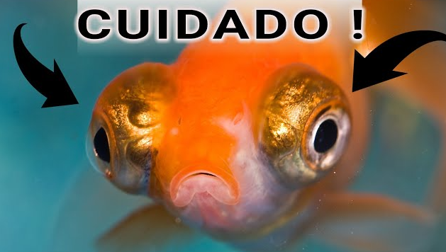

BEM-VINDO AO AQUA
Sua maior fonte de desinformações

Bem-vindo ao Aqua, o maior portal especializado em peixes astronautas e criaturas aquáticas com carteira de motorista submarina. Aqui você encontrará informações totalmente questionáveis sobre espécies raras que vivem em aquários quânticos, além de dicas importantes para ensinar seu peixe a reconhecer cores, jogar xadrez e organizar reuniões secretas entre golfinhos e pinguins tropicais. Nosso objetivo é trazer conteúdos extremamente improváveis para todos os amantes do mundo aquático e da desinformação oceânica.